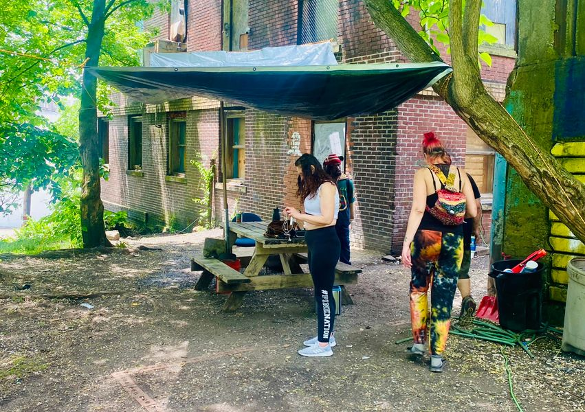

Mobile uploads
I’m a little reluctant these days to know exactly what to share with you. I’m not really sure what the political climate is yet. I think Shammas Malik is basically a Biden Democrat. Because he has Pakistani roots, I think he is a little more sensitive to the plight of Palestinians than your average mainstream Democrat. But otherwise I’d say he is pretty traditional and moderate… I think conservative is probably a better word.
So I don’t know what the law department under Shammas Malik will be like. I do know that there is a permanent order that says I will be fined or will go to jail if I put one more tent on my land. My son is in his second year of a very expensive college and so selfishly I can’t afford to go to jail right now. 
I don’t know if the law department would look at this tarp and see a tent. I don’t actually know what the legal definition of a tent is. But I put this tarp up so people could get out of the rain and the upcoming blazing sun. Next week, the temperature will get close to 100°. Having a place where you can get out of the sun is incredibly important. So we have this tarp and this picnic table.
There is Wi-Fi in this area, charging cords and a water spicket. 
I’d like to point out how clean it is. As a group, we are becoming really proficient at picking up trash. It has become our primary employment these days. We are picking up trash every Friday throughout various places in Akron. I’m very proud of what these people are doing.
For a long time on this journey, I was repeatedly shocked at how doing the right thing for people in need was a punishable offense by the government. Every mainstream spiritual leader has taught us to do that. Yet the American government never listens. From the trail of tears, to red lining, to Japanese internment camps, and now to neglecting homeless people, the American government repeatedly brutalizes people it does not like.
I now know that this is just who we are as a country. It’s embarrassing and mortally disheartening. But there is always a minority of people in America that stand up and do the right thing for people in need. These are the people that inspire me every day and hopefully I help inspire other people to do the same.